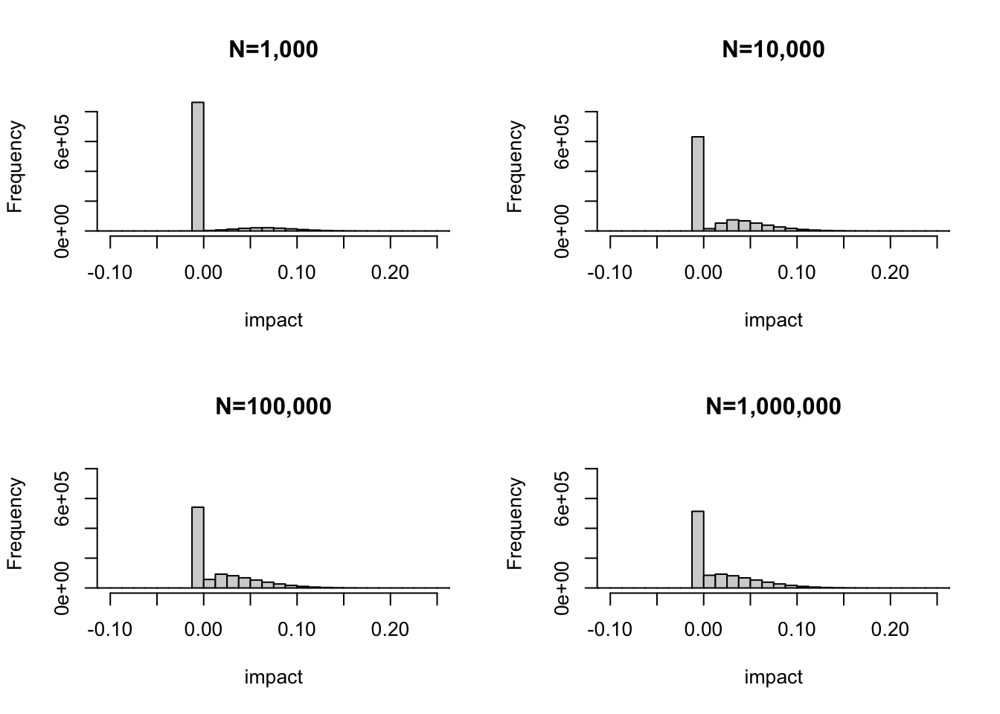
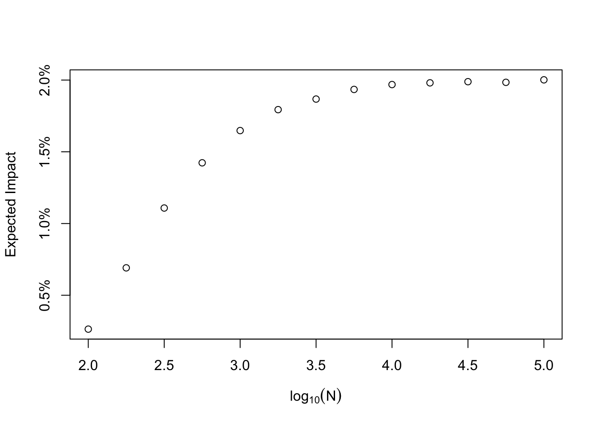
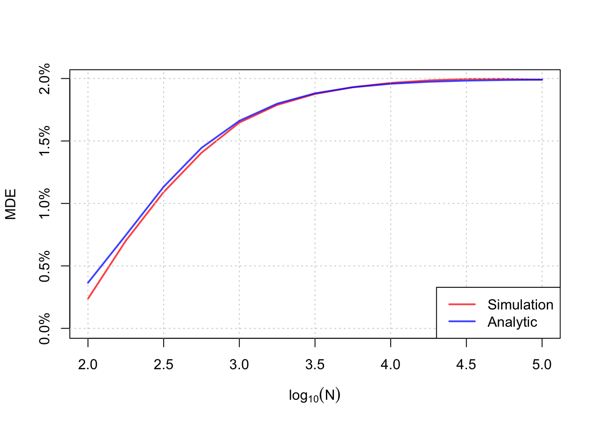
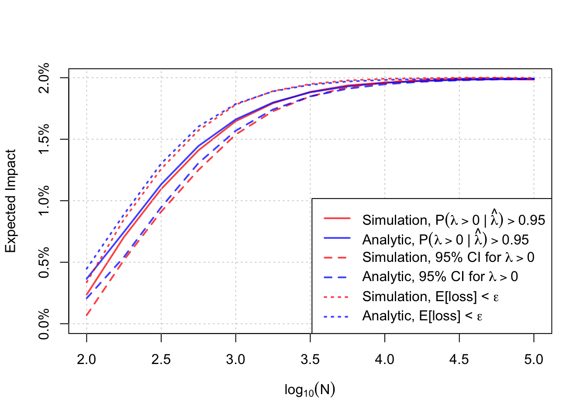

Disclaimer: This blog post is inspired, almost entirely, by Tyler Buffington’s excellent statistics reading group presentation today on the value of information in A/B testing. The ideas presented here are mainly his, I’ve just gone ahead and done a little more math (but not much more).
Introduction
In this post, I discuss decision criteria for Bayesian A/B testing and a way to think about minimal detectable effects (MDEs) for Bayesian A/B tests. I’ll also present some analytic results for calculating MDEs that can help us avoid doing simulations in practice at the cost of some mild assumptions.
First, we’ll discuss a little background on some straight forward ways to analyze A/B tests as a Bayesian and discuss a few options for ship/no-ship decision rules for A/B tests. Then, I’ll introduce a way to think about calculating MDEs as a Bayesian, and finally share some analytic results.
Bayesian Approaches to A/B Testing
Most A/B tests target the lift in a metric, defined as
\[ \lambda = \dfrac{E[Y(1)]}{E[Y(0)]} - 1 \>. \]
We can obtain an estimate of the lift, \(\hat \lambda\), via the plug in principle and the associated, \(s_\lambda\) via the delta method. Assuming \(\hat \lambda\) is draw from a normal distribution (I’ve talked about this before here), and that \(s_\lambda\) is know exactly, we can use a conjugate normal-normal model to obtain the posterior \(\Pr(\lambda \mid \hat \lambda)\). Assuming the prior mean and variance is \(\mu\) and \(\tau^2\) respectively, the posterior variance and mean, \(V\) and \(M\), are
\[ V^{-1} = \dfrac{1}{s^2_\lambda} + \dfrac{1}{\tau^2} \>, \] \[ M = V \times \left(\dfrac{\hat \lambda}{s^2_\lambda} + \dfrac{\mu}{\tau^2}\right) \>. \]
Whereas a Frequentist would make their ship/no-ship decision based on statistical significance, a Bayesian has a few options. Assuming increases to the metric are favorable, the following are some of the most popular I have seen in the wild:
- Ship if \(c \lt \Pr(\lambda \gt 0 \mid \hat \lambda)\). This is sometimes called “Probability to beat control”.
- Ship if \(0 \lt M - z_{1-\alpha/2}\sqrt{V}\). This is like a Bayesian p-value.
- Ship if \(E[\mathcal{L(\lambda)}] < \epsilon\). Here \(\mathcal{L}\) is a loss function, and so the decision is based on expected loss being sufficiently small for the decision to ship the treatment. In what follows, I will use \(\mathcal{L(\lambda}) = \min(\lambda, 0)\).
Now, these are just a few ways to make decisions (they are certainly not exhaustive). Prior to Tyler’s talk, I didn’t really have a great way to answer how long an experiment should take (save some ramblings about EVSI here). In addition to this, I was fairly biased towards preffering expected loss as a decision criterion without much evidence as to why I should prefer it. In what follows, I present some more concrete thoughts based on Tyler’s talk.
How Long To Run an A/B Test as a Bayesian
The question of how long to run an A/B test is just a function of sample size. Assuming you accrue \(n\) subjects per week, you can do some back of the napkin math to say how long the test should run to sufficiently power the experiment given an MDE. Often, we flip the script and present MDEs as a function of time (e.g. if you want a 3% MDE, run this experiment for 2 weeks. Want a smaller MDE? Run it longer). Run length is now a knob one can tune.
This is doable as a Frequentist because we have a very clear relationship between power, MDE, and sample size (which is a function of time). Although there are Bayesian conceptions of power (e.g. conditional power, unconditional power, etc etc), the formulae for these don’t so straight forwardly relate time and desired effect sizes. This is further complicated by the prior – if your prior says a 5% lift is not probable, you probably shouldn’t design experiments to detect 5% lifts.
Rather than seek a formula, we can simply draw random numbers to see what happens under different scenarios. Consider the following algorithm:
- Draw a true lift from your prior, \(\lambda\).
- Draw a control group mean from the implied sampling distribution (you need the control mean and standard error to do this, but you should know this if you were going to do a power calculation anyway).
- Draw a treatment group eman from the implied sampling distribution.
- Compute \(\hat \lambda\) and \(s_\lambda\)
- Compute \(M\) and \(V\).
- Apply your decision rule. If you reach ship criteria, then return the true lift, else return 0.
- Repeat a few thousand times.
This procedure is shown for 4 scenarios below. The histograms show the distribution of true impacts to the product under the decision rule. The large spike at 0 indicates those A/B tests which resulted in no ship decisions, and the remainder are the impacts from shipping.
Note a few things. First, while difficult to see, there are some cases (especially in small sample sizes) where we ship harm to the product! This makes sense, when we have noisy measurements sometimes we can make type \(S\) errors. As the sample size increases, the probability we make these errors decreases as does the proportion of no-ship decisions (the height of the spike decreases). Second, the mean of this distribution is the “average impact to the product”. This mean changes slightly due to my first point, and eventually the distribution of these impacts stabilizes to some limiting distribution (Tyler referred to this as the Clairvoyant distribution, essentially the distribution of impacts where you to know the true lift perfectly). Hence, there is some upper bound to the mean.
Below is a plot of the mean of this distribution as a function of sample size, and you can see this limiting behavior quite clearly. The proposal is to treat the average of this distribution as your MDE! From the plot, running A/B tests too short means the impact is going to be very small on average, but running longer means that (under the prior) you will impact the product more. There comes a point where running the test longer is not helpful, you encounter diminishing returns. This is a nice way to think about run time in my opinion! Now, MDE is probably the wrong term here, but it is analogous to the presented MDEs in a typical A/B testing approach.

Note that I’ve just shown simulations for probability to beat, but the simulation approach is sufficiently flexible to accommodate any decision rule (expected loss, Bayesian p values, or whatever you can cook up). If you’re an analyst, you can do this fairly readily on your computer. What if you wanted to make this a product many people can use, and use with reproducible results? Simulating is fine in my opinion, generating random numbers and counting should be pretty cheap, but it would be cool to have a formula for the expected value of this distribution as a function of the total sample size.
An Analytic Solution
Let’s stick with probability to beat for a moment. The ship decision is, equivalently,
\[ c \lt \Phi\left(\dfrac{M}{\sqrt{V}}\right) \>, \]
or equivalently
\[ \Phi^{-1}(c) \lt \dfrac{M}{\sqrt{V}} \>. \]
Here, \(\Phi\) is the CDF of a standard normal distribution. The discourse and evidence across the A/B testing suggests that most A/B tests fail to move metrics, meaning that we should expect \(\mu \approx 0\) as our prior mean. As a consequence, our ship condition would be
\[ \Phi^{-1}(c) \lt \dfrac{\hat \lambda}{s^2_\lambda\sqrt{\dfrac{1}{s^2_\lambda} + \dfrac{1}{\tau^2}}} \>.\]
Additionally, I personally think that an appropriate prior standard deviation is going to be small since we don’t routinely detect enormous hurt/help to the product. As a consequence of this, this would mean that \(\lambda \approx 0\), or that the average outcomes in groups are going to be similar, at least to a first order approximation! This means that the sampling variance of the lift can be approximated as
\[ s^2_\lambda \approx \left( \dfrac{s^2_t + s^2_c}{\bar y^2_c} \right) \>. \] Here, the subscripts indicate estimates for treatment, \(t\), or control, \(c\). This means we can re-write our decision criteria solely as a function of the estimated lift
\[ S = \Phi^{-1}(c) \cdot s^2_\lambda \cdot \sqrt{\dfrac{1}{s^2_\lambda} + \dfrac{1}{\tau^2}} \lt \hat \lambda \>. \]
If we know the true lift \(\lambda\), we could calculate the probability hat this criteria would be met by \(\hat \lambda\). It would be
\[ \Pr(S \lt \hat \lambda \mid \lambda) = 1 - \Phi\left(\dfrac{S-\lambda}{s_\lambda} \right)\]
but of course we don’t know \(\lambda\). We do however have a prior over \(\lambda\), so we can compute the MDE as
\[ \mbox{mde} = \int_{-\infty}^{\infty} \lambda \cdot \left(1 - \Phi\left(\dfrac{S-\lambda}{s_\lambda} \right) \right) f(\lambda) d\lambda \>. \]
Here, \(f\) is the prior density of \(\lambda\). Now, this looks like a right hairy bastard, but it is actually quite manageable for R or other numerical integration since the integrand is nice and smooth. Shown below are the simulated and analytic results for the probability to beat control decision rule. The approximation isn’t bad!

This sort of exercise can be done for the remaining two decision rules. While I leave that exercise to the reader (or perhaps to their AI), I will leave you with just a plot comparing the analytic formulae and the simulations.
